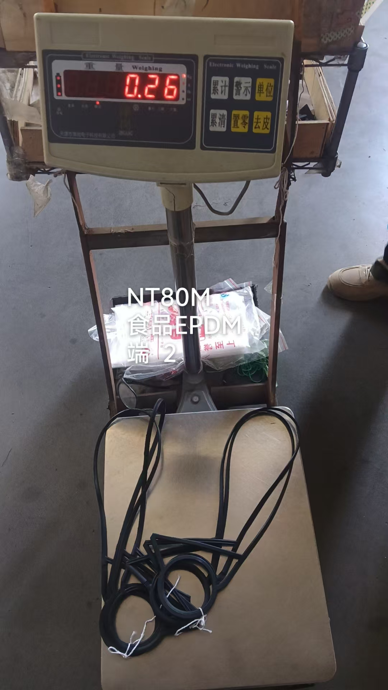
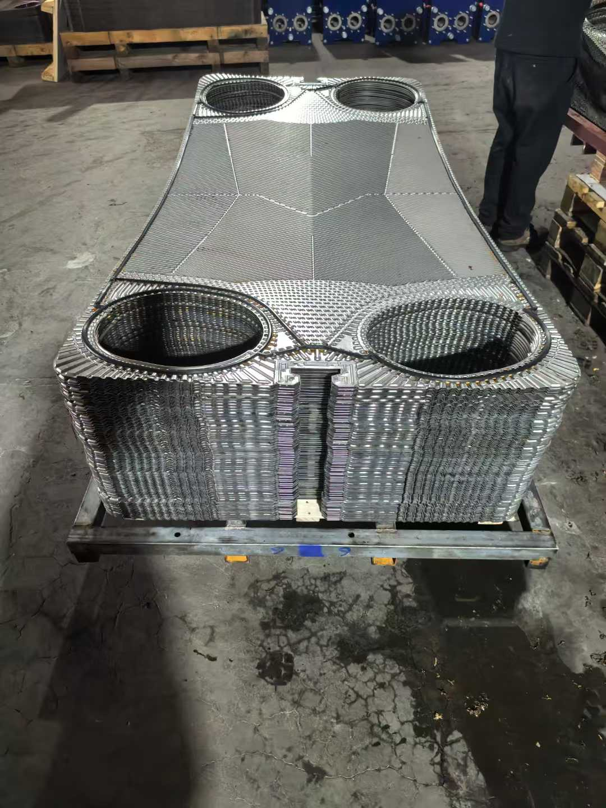
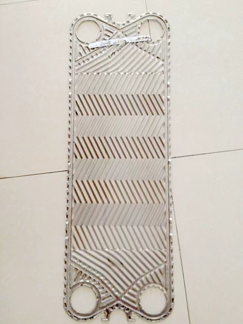
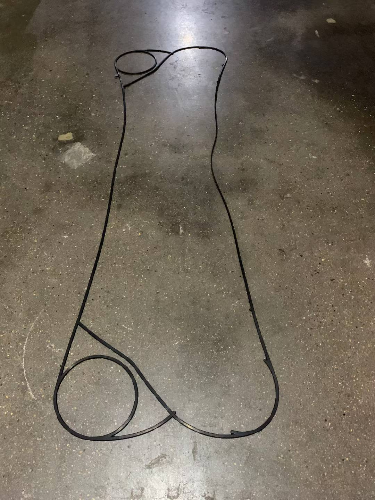
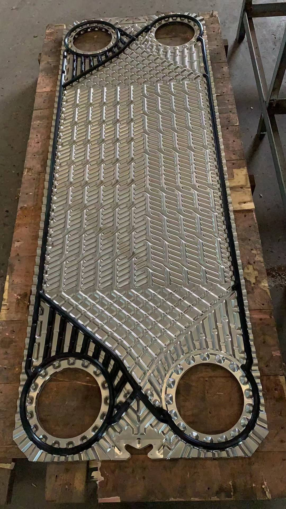
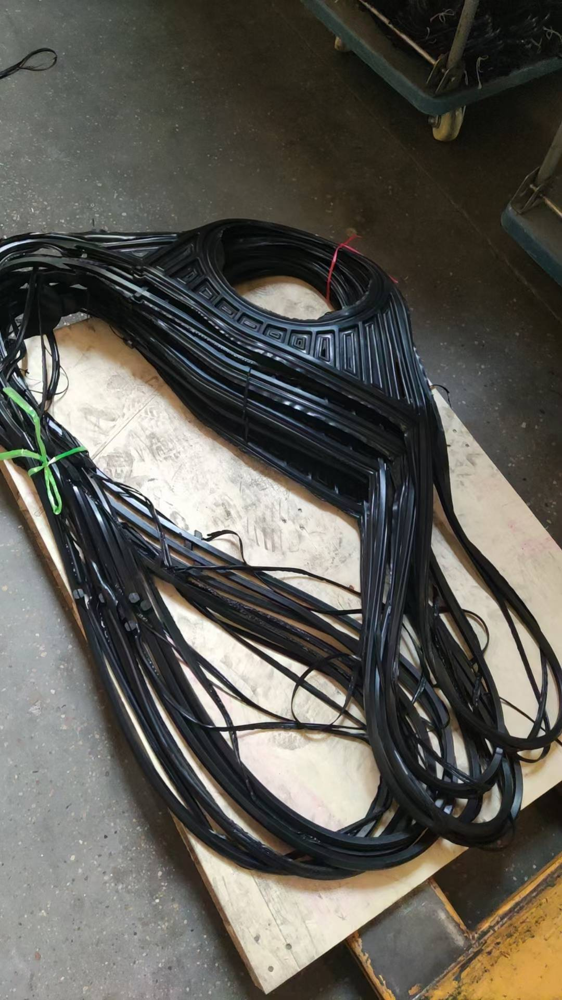
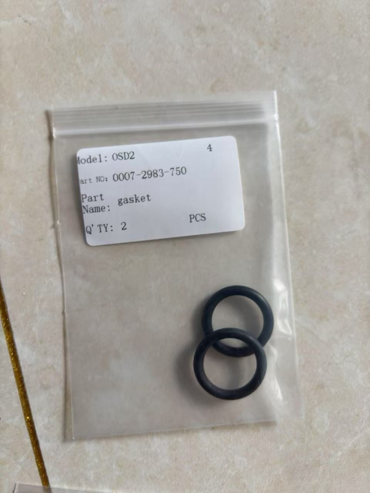
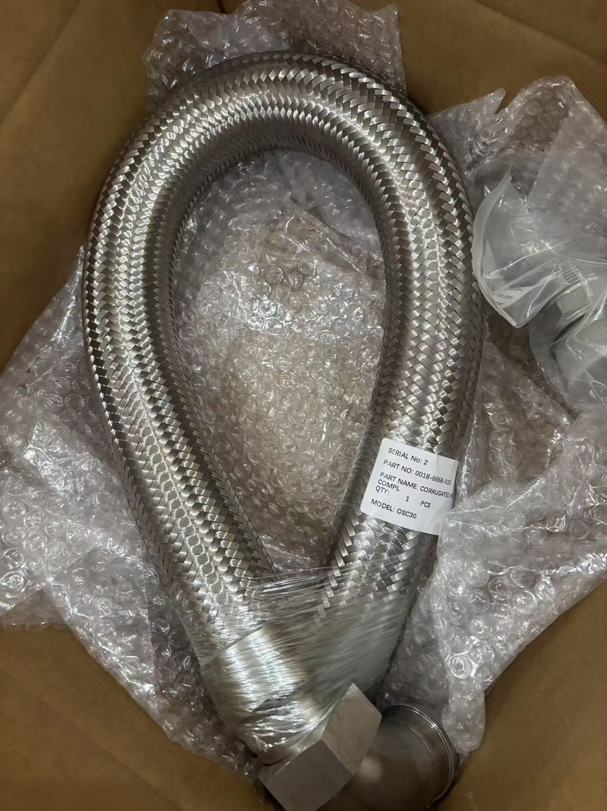

GEA（Kelvion）板式换热器与船用分油机常用型号介绍
GEA/Kelvion — 百年热交换技术专家
GEA（现为Kelvion）是全球领先的板式换热器制造商之一，其热交换技术历史可追溯至1920年代。2015年，GEA换热器业务正式更名为Kelvion，名称源自热力学之父开尔文勋爵（Lord Kelvin）。Kelvion在全球拥有67个分支机构和5000名员工，产品覆盖垫片式、钎焊式和焊接式三大类板式换热器，广泛应用于船舶、石油天然气、化工、电力、食品饮料、制冷和制糖等行业。

在船舶领域，GEA/Kelvion的板式换热器和Westfalia分油机是船用设备的重要组成部分，几乎覆盖全球各大船东的机舱设备清单。
一、垫片式板式换热器（Gasketed PHE）
GEA/Kelvion的垫片式板式换热器采用模块化设计理念——同一框架可适配不同板片系列，灵活应对各种工况变化。其核心产品线涵盖N系列（New Technology）的多个子系列，每个系列针对特定应用场景进行了优化设计。
1. NT系列 — 全能型板片
NT系列是Kelvion最经典的"全能型"板片系列，适用于几乎所有的常规换热应用。
特点：
- 板片材料选择范围广（304、316L、904L、254SMO、钛材、C-276等）
- 垫片材料选择最全（NBR、EPDM、FKM/Viton、CR/Neoprene）
- 板片规格覆盖面最广，从NT25到NT350共十余种规格
- 性价比高，交货周期短
常用型号：
NT25, NT50, NT50M, NT50X, NT80, NT80M, NT100, NT100M, NT150S, NT150L, NT250S, NT250, NT350, NT500
典型应用： 中央冷却器、淡水冷却器、滑油冷却器、暖通空调系统

2. NX系列 — 高效型板片
NX系列（New eXtra）采用窄间隙设计，专为需要极小温差逼近（可低至1°C）的高性能应用而开发。
特点：
- 适用于温度差极小的高效换热场景
- 高NTU值，换热效率极高
- 适用于区域供热/供冷系统
常用型号：
NX50, NX100, NX150, NX250, NX350
3. NP系列 — 超高性能板片
NP系列（New Performance）将换热性能提升到新高度，测试压力可达42 bar(g)，是数据中心冷却和高层建筑冷供系统的首选。
特点：
- 测试压力高达42 bar(g)
- 适用于极低温差换热
- 高NTU值应用场景

4. NH系列 — 高压型板片
NH系列（New High pressure）专为高压工况设计，压力可达36 bar(g)，适用于石油天然气和化工行业。
特点：
- 特殊人字波纹设计，兼顾高压阻力与换热效率
- 可选钛材或特殊合金（254SMO、C-276）
- 压力等级最高36 bar(g)
5. ND系列 — 双壁型板片
ND系列（New Double-wall）采用双板壁结构，两层薄板在端口处焊接，中间形成泄漏检测间隙。
特点：
- 两种介质间不会混合，安全性极高
- 板片破裂时有泄漏预警指示
- 符合饮用水应用法规要求
6. NL系列 — 大间隙型板片
NL系列（New Large gap）板间隙超过4mm，适用于高粘度或剪切敏感介质。
特点：
- 减少堵塞，延长使用寿命
- 适用于乳制品、食品饮料等剪切敏感产品
- 压力可达25 bar(g)

7. NW系列 — 宽间隙型板片
NW系列（New Wide gap）板间隙可达10mm，专为含固体颗粒和纤维的介质设计。
特点：
- 即使含固体介质也能无堵塞运行
- 湍流促进自清洁效果
- 粘性介质压力损失小
8. NF系列 — 自由流型板片
NF系列（New Free flow）采用特殊的洗衣板状波纹设计，板间通道宽度可达12mm。
特点：
- 通道宽度恒定，无接触点
- 含纤维和固体介质的理想选择
- 可替代管壳式和螺旋式换热器
二、钎焊式板式换热器（Brazed PHE）
GEA/Kelvion的钎焊系列提供市场上最广泛的尺寸、钎焊材料和连接方式选择。
VT系列 — 铜钎焊板式换热器
VT系列采用铜钎焊工艺，适用于常规水/水换热和HVAC系统。
常用型号：
VT10, VT20, VT40, VT80, VT150


特点：
- 结构紧凑，无垫片维护需求
- 使用寿命长
- 最高效率
三、焊接式板式换热器（Welded PHE）
FA系列 — 全焊接板式换热器
FA系列采用全焊接结构，适用于高温高压和腐蚀性介质工况。
常用型号：
FA184, FA192


特点：
- 无垫片设计，适用于极端温度和压力
- 适用于石油化工、油气等苛刻工况
- 可承受高温介质
四、Westfalia船用分油机
GEA Westfalia Separator是船用分油机领域的领导品牌，其产品广泛应用于船舶燃油净化和滑油净化系统。
OSD系列 — 自清式分油机
OSD系列是Westfalia最经典的船用自清式分油机，采用自动排渣功能，无需停机即可分离杂质。
常用型号：
OSD2, OSD6-91-067, OSD18, OSD36, OSD55
技术参数（以OSD 6-91-067为例）：
- 分离筒类型：自清式
- 适用介质：矿物油（燃油、滑油）
- 处理量：根据介质粘度变化
- 分离原理：离心分离


特点：
- 自清式分离筒，无需停机排渣
- 可选水洗功能
- 配套三菱SJ30G齿轮泵供油
- 船级社认证（DNV-GL等）
OSC系列 — 小型分油机
OSC系列适用于小型船舶的燃油和滑油净化。
常用型号：
OSC5, OSC15, OSC30

特点：
- 结构紧凑，占用空间小
- 适用于小型船舶机舱
- 操作简便，维护方便
五、船舶应用场景
板式换热器在船舶上的应用
GEA板式换热器在船舶上主要用于以下系统：
- 中央冷却器：NT250S/NT350大型板式换热器，承担全船中央冷却
- 淡水冷却器：NT100/NT150系列，冷却发电机淡水
- 滑油冷却器：NT50/NT80系列，冷却主机和辅机滑油
- 燃油加热器：利用余热加热重油至雾化温度
- 造水机冷凝器：钎焊VT系列用于造水机系统
分油机在船舶上的应用
Westfalia分油机主要用于：
- 燃油净化：去除燃油中的水和杂质（OSD系列大处理量）
- 滑油净化：分离滑油中的微粒和水分（OSC/OSD系列）
- 燃油转换：在不同油品间切换时处理混合油
六、维护保养要点
板式换热器维护
- 定期清洗：根据水质情况，每3-6个月化学清洗一次
- 垫片更换：垫片寿命通常3-5年，建议定期检查弹性
- 板片检查：检查板片有无穿孔、腐蚀，特别是焊缝区域
- 压差监控：压差增大通常是结垢的信号
分油机维护
- 分离筒保养：按运行小时数定期拆洗分离筒
- 摩擦离合器检查：检查摩擦片磨损情况
- 密封件更换：O型圈和密封垫需定期更换
- 振动监测：异常振动需立即停机检查
七、GEA/Kelvion配件供应
GEA/Kelvion板式换热器常用配件包括：
| 配件类型 | 说明 |
|---|---|
| 板片 | 304/316L/钛/254SMO等多种材质 |
| 垫片 | NBR/EPDM/FKM/CR等材质 |
| 压紧螺栓 | 专用紧固件 |
| 密封圈 | 各规格O型圈 |
| 导向杆 | 上/下导向杆组件 |
Westfalia分油机常用配件：
| 配件类型 | 说明 |
|---|---|
| 分离筒组件 | 碟片组、分离筒本体 |
| 摩擦离合器 | 离合器片组件 |
| 密封件 | O型圈、密封垫 |
| 齿轮泵 | 三菱SJ30G齿轮泵及配件 |
| 控制阀块 | 电磁阀组 |
总结
GEA/Kelvion作为百年热交换技术品牌，其板式换热器产品线覆盖从常规水冷到极端工况的全系列应用。N系列模块化设计理念（一框多用）为用户提供了极大的灵活性。Westfalia分油机则是船舶燃油和滑油净化的核心设备。
准确识别设备型号、了解各系列特点，是做好备件采购和设备维护的基础。如需GEA/Kelvion板式换热器或Westfalia分油机的配件报价及技术支持，欢迎联系我们。